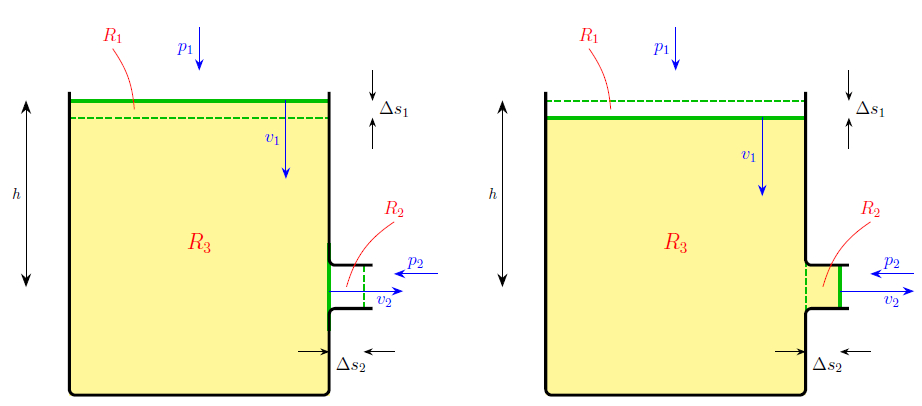
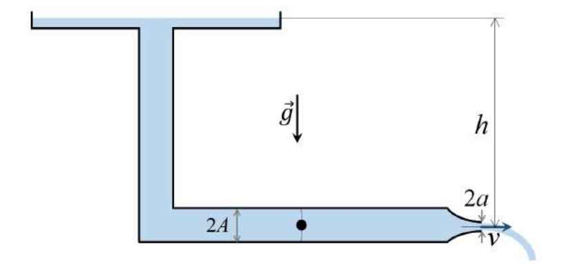

Pigkappa26 dic 2023, 15:09
Mi spieghi da dove viene quel \(\pm 32\)? Ho il brutto presentimento che tu abbia sommato gli errori assoluti a numeratore e denominatore...
Mi spiego meglio. Se si deve sviluppare \(\displaystyle \frac{a \pm \delta a}{b \pm \delta b}\) si puo' fare questo:
\(\displaystyle \frac{a \pm \delta a}{b \pm \delta b} = \frac{a}{b} \Big( \frac{1 \pm \frac{\delta a}{a} }{1 \pm \frac{\delta b}{b}} \Big) \approx \frac{a}{b} \Big( 1 \pm (\frac{\delta a}{a} + \frac{\delta b}{b} ) \Big)\)
Dove si sono sommati gli errori relativi.
Se non sbaglio nel tuo caso si trova
\(\displaystyle \rho = (900 \pm 61) \text{g cm}^{-3}\)
Pigkappa26 dic 2023, 16:41
Per andare avanti, partendo da questa:
Higgs ha scritto: ↑23 dic 2023, 18:40
\(\frac{m.dV}{dt}+\alpha V=S-P\) equazione del primo ordine non omogenea
E' vero che si possono risolvere queste equazioni trovando le soluzioni della omogenea e una soluzione della non omogenea, e procedere cosi', ma secondo me e' piu' facile imparare prima il metodo per le equazioni a variabili separabili, che qua si applica.
Spostando i termini nell'equazione e trattando i differenziali tipo \(\displaystyle dV\) come se fossero semplici variabili:
\(\displaystyle \frac{dV}{S - P - \alpha V} = \frac{dt}{m}\)
Integrando dal tempo 0 a tempo T:
\(\displaystyle \int_0^T{\frac{dV}{S - P - \alpha V}} = \frac{T}{m}\)
Da cui, se non sbaglio i conti a mente, \(\displaystyle \frac{1}{-\alpha} \log(\frac{S-P- \alpha V(T)}{S - P}) = \frac{T}{m}\)
Da cui \(\displaystyle V(T) = \frac{S-P}{\alpha} (1 - \exp{(\frac{-\alpha T}{m})})\)
Il risultato ha senso: se \(\displaystyle \alpha \rightarrow 0\) vale \(\displaystyle \exp{(\frac{-\alpha T}{m})} \approx 1 - \frac{\alpha T}{m}\) e \(\displaystyle V(T) \approx \frac{S-P}{m} T\) che va bene perche' in tal caso abbiamo accelerazione costante perche' non c'e' forza di resistenza.
Avrei forse dovuto usare il simbolo \(\displaystyle t\) invece di \(\displaystyle T\). Abbiamo ricavato la velocita' in funzione del tempo e possiamo usare che \(\displaystyle \frac{dy}{dt} = V(t) = \frac{S-P}{\alpha} (1 - \exp{(\frac{-\alpha t}{m})})\) che e' un'altra equazione differenziale a variabili separabili che possiamo risolvere, e poi potremo usare i dati della tabella...
Pigkappa26 dic 2023, 16:55
Comunque, forse si puo' evitare di fare il conto che dico qua sopra perche' guardando i dati in tabella sembra chiaro che dopo i 200 centrimetri si e' gia' raggiunta quasi perfettamente la velocita' limite, perche' in ogni caso si fanno 100 cm in piu' in quasi esattamente un secondo in piu'. Quindi si puo' stimare bene la velocita' limite, e sappiamo dalle formule qua sopra che questa e' \(\displaystyle \frac{S - P}{\alpha}\)...
Tarapìa Tapioco26 dic 2023, 22:31
Pigkappa ha scritto: ↑26 dic 2023, 16:41
Spostando i termini nell'equazione e trattando i differenziali tipo
\(\displaystyle dV\) come se fossero semplici variabili:
\(\displaystyle \frac{dV}{S - P - \alpha V} = \frac{dt}{m}\)
Integrando dal tempo 0 a tempo T:
\(\displaystyle \int_0^T{\frac{dV}{S - P - \alpha V}} = \frac{T}{m}\)
Da cui, se non sbaglio i conti a mente,
\(\displaystyle \frac{1}{-\alpha} \log(\frac{S-P- \alpha V(T)}{S - P}) = \frac{T}{m}\)
Da cui
\(\displaystyle V(T) = \frac{S-P}{\alpha} (1 - \exp{(\frac{-\alpha T}{m})})\)
Il risultato ha senso: se
\(\displaystyle \alpha \rightarrow 0\) vale
\(\displaystyle \exp{(\frac{-\alpha T}{m})} \approx 1 - \frac{\alpha T}{m}\) e
\(\displaystyle V(T) \approx \frac{S-P}{m} T\) che va bene perche' in tal caso abbiamo accelerazione costante perche' non c'e' forza di resistenza.
I calcoli sono tutti corretti.
Pigkappa ha scritto: ↑26 dic 2023, 16:41
Abbiamo ricavato la velocita' in funzione del tempo e possiamo usare che
\(\displaystyle \frac{dy}{dt} = V(t) = \frac{S-P}{\alpha} (1 - \exp{(\frac{-\alpha t}{m})})\) che e' un'altra equazione differenziale a variabili separabili che possiamo risolvere, e poi potremo usare i dati della tabella...
È davvero necessario risolvere l'equazione differenziale da te scritta? La velocità \(V(t) = \frac{\mathrm{d}y}{\mathrm{d}t}\) corrisponde alla pendenza del grafico delle distanze misurate \(y\) rispetto ai tempi misurati \(t\) e può essere calcolata analiticamente dai dati sperimentali attraverso vari metodi che coinvolgono la regressione lineare...
Pigkappa ha scritto: ↑26 dic 2023, 16:55
Comunque, forse si puo' evitare di fare il conto che dico qua sopra perche' guardando i dati in tabella sembra chiaro che dopo i 200 centrimetri si e' gia' raggiunta quasi perfettamente la velocita' limite, perche' in ogni caso si fanno 100 cm in piu' in quasi esattamente un secondo in piu'. Quindi si puo' stimare bene la velocita' limite, e sappiamo dalle formule qua sopra che questa e'
\(\displaystyle \frac{S - P}{\alpha}\)...
Esatto. Quando si lascia libera la sfera, questa accelera da ferma fino alla velocità limite (approssimativamente) molto rapidamente, in meno di un secondo: nonostante il grafico non passi per l'origine degli assi cartesiani, i punti corrispondenti alle \(y\) comprese tra \(100\) e \(500 \ \text{cm}\) formano una linea molto vicina ad una retta, pertanto la velocità assunta dalla sfera durante il tratto in questione è approssimativamente costante ed è molto vicina alla velocità limite.
L'equazione della velocità è \(V(t) = \frac{S-P}{\alpha} \left[1 - \exp \left(-\frac{\alpha t}{m}\right)\right]\), dove \(S-P = \rho_W V_C g\) e \(m = \rho_W (V_R -V_C)\). Integrando, si ottiene l'equazione \(y(t)\) della distanza in funzione del tempo:
\(y(t) = \frac{S-P}{\alpha} t + \frac{m (S-P)}{\alpha^2} \exp \left(-\frac{\alpha t}{m}\right) + C\).
L'esperimento misura distanze percorse e relativi tempi impiegati, pertanto l'equazione si applica direttamente alle misure sperimentali fornite.
L'equazione sopra indicata presenta tre termini: si osservi come ognuno di essi cambi al variare del tempo \(t\).
1) Il primo termine è \(\frac{S-P}{\alpha} t\) e aumenta al crescere del tempo.
2) Il secondo termine è \(\frac{m (S-P)}{\alpha^2} \exp \left(-\frac{\alpha t}{m}\right)\) e diminuisce al crescere del tempo.
3) L'ultimo termine è la costante di integrazione \(C\), che non cambia nel tempo.
Pertanto, per tempi sufficientemente grandi, il secondo termine può essere ignorato in quanto è molto più piccolo degli altri due. L'equazione sopra indicata diventa quindi
\(y(t) \approx \frac{S-P}{\alpha} t + C\)
e rappresenta l'equazione di una retta con pendenza \(\frac{S-P}{\alpha}\) e intercetta \(C\), approssimativamente corrispondente al grafico di \(y\) rispetto a \(t\) tracciato a partire dai dati sperimentali, in accordo al quale i tempi utilizzati nell'esperimento, da \(1\) a \(5\) secondi circa, sono abbastanza lunghi da rendere sufficientemente piccolo e trascurabile il termine esponenziale.
L'equazione della velocità si semplifica in:
\(V(t) \approx \frac{S-P}{\alpha}\),
da cui
\(\alpha \approx \frac{S-P}{V(t)}\)
Aggiungo, inoltre, che a mio giudizio l'esperimento è stato concepito in modo che il candidato si preoccupasse solo della velocità limite: il testo richiede una valutazione del coefficiente \(\alpha \), legato alla velocità limite \(v_{\text{lim}}\) da \(S- P = \alpha \ v_{\text{lim}}\), pertanto non è primario interesse determinare come cambi la velocità per piccoli istanti dopo il rilascio della sfera. La presenza del termine esponenziale, in aggiunta, renderebbe abbastanza complesso (almeno per un liceale) il calcolo di \(V(t)\) e dell'errore relativo in \(\alpha\).
Pigkappa31 dic 2023, 20:57
Higgs ha scritto: ↑28 dic 2023, 12:57
come dal mio primo post era
\(V(t)=\frac{S-P}{\alpha} e^{-\frac{\alpha t}{m}}\)
Questa formula è sbagliata, per \(\displaystyle t \rightarrow +\infty\) la velocità deve tendere ad una costante, non a 0. Guarda il risultato nel mio post sopra...
Higgs ha scritto: ↑28 dic 2023, 12:57
ma S-P mi viene dell'ordine di 50 milioni di dyne
Ma perché usi i dyne come unità di misura? Il sistema cgs non si usa quasi più, e quel poco che si usa è nel contesto dell'elettromagnetismo dove alcune formule vengono più semplici.
Higgs ha scritto: ↑28 dic 2023, 12:57
bisogna calcolare l'incertezza relativa [s]e percentuale[/s] di S-P e addizionarla a quella relativa e percentuale di V(t)?
Sì. Non serve dire "e percentuale", basta dire "relativa".
Questo conto io ancora non l'ho fatto e non so se venga una incertezza relativa simile a quella che chiede il testo. Se viene più grande, bisogna inventarsi qualcos'altro.
Pigkappa31 dic 2023, 21:08
Per quanto riguarda la parte b, il testo era proprio così o magari c'era una figura inclusa?
Sia \(\displaystyle y_0\) l'altezza dal suolo del foro, \(\displaystyle y_1\) l'altezza del punto in cui l'acqua passa da serbatoio e foro, e \(\displaystyle y_2\) l'altezza della superficie superiore dell'acqua nel serbatoio. Io direi che la velocità di uscita dal foro si trova facilmente con Bernoulli applicato tra \(\displaystyle y_0\) e \(\displaystyle y_2\) e viene \(\displaystyle \sqrt{2 g (y_2 - y_0)}\).
Ma, se ho capito bene il testo, \(\displaystyle y_2\) non è dato, il che mi blocca su questo punto.
Nel caso in cui c'è la sfera, non si applica Bernoulli perché c'è dissipazione di energia per attrito quando il fluido passa vicino alla sfera, ma la potenza dissipata dovrebbe essere facile da calcolare...
Tarapìa Tapioco1 gen 2024, 4:38
Higgs ha scritto: ↑28 dic 2023, 12:57
2) Per quanto riguarda invece la soluzione di V(t) trovo che la mia sia più immediata e veloce nel determinare la velocità limite. Infatti come dal mio primo post era
\(V(t)=\frac{S-P}{\alpha} e^{-\frac{\alpha t}{m}}\) che per
\(\alpha\) trascurabile diventa subito
\(V(t)=\frac{S-P}{\alpha}\) senza le tue successive approssimazioni davvero proibitive per un liceale
Nonostante sia più immediata e veloce nella determinazione della velocità limite, la tua soluzione per \(V(t)\) non è corretta: l'errata forma della tua espressione ti ha quindi condotto ad avanzare premesse errate e non univoche nei riguardi della valutazione della velocità limite. Benché apparentemente proibitivo, quello ottimamente mostrato da @Pigkappa è il migliore (e più giusto) metodo che permetta di pervenire alla corretta espressione di \(V(t)\).
Si esaminino in dettaglio le motivazioni per le quali i tuoi risultati e le annesse assunzioni sono sbagliati.
La tua soluzione per \(V(t)\) è \(V(t)=\frac{S-P}{\alpha} e^{-\frac{\alpha t}{m}}\)
1) Secondo questa equazione, per \(t=0\) si ottiene la velocità limite \(V_{\text{lim}}=\frac{S-P}{\alpha}\). Questo risultato è assurdo, in quanto non vi è una corretta corrispondenza tra la condizione iniziale (\(t=0\)) e il risultato atteso in concomitanza ad essa (che, per \(t=0\), dovrebbe essere \(V(0) = 0\)).
La velocità limite è la velocità massima (asintotica) che un oggetto può raggiungere durante la sua caduta libera in presenza di resistenza viscosa: un corpo in caduta soggetto a resistenza aerodinamica non raggiungerà mai perfettamente la sua velocità limite - vi si approssima asintoticamente (così come la sua accelerazione si avvicina allo \(0\), senza tuttavia mai raggiungerlo). Pertanto, la velocità limite sarà ottenuta dall'espressione generale della velocità per \(t \to + \infty\), non per \(t = 0\), dunque: \(V_{\text{lim}} = V(+ \infty)\).
Per \(t \to + \infty\), la tua espressione restituisce \(V(+ \infty) = V_{\text{lim}} = 0\), risultato altrettanto assurdo che implicherebbe un moto per il quale il corpo inizierebbe a muoversi e risalire con una velocità iniziale pari a quella effettivamente limite (costante), per poi proseguire perpetuamente con tale velocità, approcciando una velocità nulla (di arresto) soltanto quando sia trascorso un tempo infinito (la velocità limite sarebbe apparentemente uguale alla velocità di arresto). Tale situazione fisica è praticamente opposta a quella realmente vigente, in accordo alla quale la sfera inizia a muoversi con velocità nulla e accelera da ferma fino a raggiungere una velocità molto vicina alla velocità limite, che approccia soltanto all'infinito.
La soluzione corretta, \(V(t) = \frac{S-P}{\alpha} \left[1 - \exp \left(-\frac{\alpha t}{m}\right)\right]\), ammette invece una perfetta concordanza tra condizioni iniziali e risultato finale, dal momento che:
\(a)\) per \(t=0\), si ha: \(V(t) = \frac{S-P}{\alpha} \left[1 - \exp \left(-\frac{\alpha t}{m}\right)\right]\) \(\stackrel{t = 0}{\boldsymbol{\implies}}\) \(V(0) = \frac{S-P}{\alpha} \left[1 - \exp \left(-\frac{\alpha \cdot 0}{m}\right)\right] = \frac{S-P}{\alpha} (1 - 1) = 0\).
Dunque: \( V(0) = 0 \qquad \blacksquare\)
\(b)\) per \(t \to + \infty\), si ha: \(V(t) = \frac{S-P}{\alpha} \left[1 - \exp \left(-\frac{\alpha t}{m}\right)\right]\) \(\stackrel{t \to +\infty}{\boldsymbol{\implies}}\) \(V(+\infty) = \lim_{t \to + \infty} V(t) = \) \(= \lim_{t \to + \infty} \frac{S-P}{\alpha} \left[1 - \underbrace {\exp \left(-\frac{\alpha t}{m}\right)}_{= 0}\right] =\) \(\frac{S-P}{\alpha}\).
Dunque: \( V(+\infty) = \frac{S-P}{\alpha} = V_{\text{lim}} \qquad \blacksquare\).
Il vincolo \(t \to +\infty\) è l'unica condizione necessaria e sufficiente per il raggiungimento della velocità limite. Stante tale situazione, non esistono altre condizioni il cui soddisfacimento permetta di calcolare la velocità limite dall'espressione più generale della velocità in funzione del tempo.
2) La seguente frase Higgs ha scritto: ↑28 dic 2023, 12:57
per
\(\alpha\) trascurabile diventa subito
\(V(t)=\frac{S-P}{\alpha}\)
è l'origine della confusione che ti ha condotto ad un'errata valutazione della situazione fisica.
Quasi sicuramente, hai identificato la condizione \(\alpha \to 0\) con il vincolo necessario da applicare a \(V(t)\) per ottenere la velocità limite \(V_{\text{lim}}\). Questa assunzione è errata. Non v'è alcuna correlazione tra l'assestamento della velocità limite e l'assunzione di una costante \(\alpha\) di viscosità prossima allo zero (dunque, trascurabile): infatti, la velocità limite si configura come la velocità (massima) raggiunta da un corpo in caduta libera quando la somma della forza di resistenza aerodinamica e della forza di galleggiamento (agenti verso l'alto) eguaglia la forza peso (agente verso il basso) dell'oggetto stesso, pertanto rendere trascurabile (in maniera arbitraria) il coefficiente d'attrito renderebbe inapprezzabile l'effetto della forza di resistenza, vanificando le condizioni necessarie per il raggiungimento della velocità limite stessa.
Pertanto: \(\alpha \to 0 \nRightarrow V(t) = V_{\text{lim}} = \frac{S-P}{\alpha}\).
Molto probabilmente, alle radici di questo travisamento è da ricercarsi un'errata interpretazione dell'esempio avanzato da @Pigkappa riguardo alla condizione \(\alpha \to 0\). Di fatto, questa condizione esemplificativa possedeva il solo scopo di giustificare la sensatezza e la ragionevolezza del generico risultato di \(V(t)\), dal momento che un'approssimazione correttamente eseguita per \(\alpha \to 0\) avrebbe restituito una velocità \(V(t)\) linearmente dipendente dal tempo, ovvero un'accelerazione costante (non una velocità costante), in linea con una situazione data dall'assenza di viscosità.
La tua espressione sbagliata di \(V(t)\) ti conduce al valore corretto della velocità limite \(V_{\text{lim}}\) a causa della somma di due errori:
\(A)\) Applicare un'approssimazione per \(\alpha \to 0\) conseguita in maniera errata. Purtroppo, in maniera arbitraria, hai considerato \(\alpha\) trascurabile sostituendo \(\alpha = 0\) soltanto nell'esponenziale, senza tuttavia curarti della presenza di \(\alpha\) al denominatore del fattore \(\frac{S-P}{\alpha}\).
Sostituendo \(\alpha = 0\) nell'espressione corretta di \(V(t)\), l'approssimazione \(\alpha \to 0\) conduce infatti alla forma indeterminata \(0 \cdot \infty\), che può essere risolta tramite l'applicazione del Teorema di de l'Hôpital.
\(V(t) = \frac{S-P}{\alpha} \left[1 - \exp \left(-\frac{\alpha t}{m}\right)\right]\)
\(\lim_{ \alpha \to 0} V(t) = \lim_{\alpha \to 0} \frac{S-P}{\alpha} \left[1 - \exp \left(-\frac{\alpha t}{m}\right)\right]\) \(\Rightarrow \\) \( \lim_{\alpha \to 0} \frac{(S-P) \left[1 - \exp \left(-\frac{\alpha t}{m}\right)\right]}{\alpha}\) \(= \lim_{\alpha \to 0} \dfrac{\dfrac{\mathrm{d}}{\mathrm{d}\alpha}(S-P) \left[1 - \exp \left(-\frac{\alpha t}{m}\right)\right]}{\dfrac{\mathrm{d}}{\mathrm{d}\alpha}\alpha} =\) \(= \lim_{ \alpha \to 0} \dfrac{(S-P) \left[-\left(-\dfrac{t}{m} \exp \left(-\frac{\alpha t}{m}\right) \right)\right]}{1}\) \(=\lim_{ \alpha \to 0} \dfrac{(S-P) \left(\dfrac{t}{m}\right)}{\exp \left(\frac{\alpha t}{m}\right)}\) \( = \dfrac{(S-P) \left(\dfrac{t}{m}\right)}{\exp \left(\frac{0 \cdot t}{m}\right)}\) \(= \dfrac{(S-P) \left(\dfrac{t}{m}\right)}{1}.\)
Dunque: \(V(t) \approx \frac{S-P}{m} t \qquad \text{per} \quad \alpha \to 0\)
Sostituendo \(\alpha = 0\) nella tua espressione di \(V(t)\), l'approssimazione \(\alpha \to 0\) conduce invece a \(V(t) \to \infty\), risultato impossibile.
\(B)\) Considerare \(\alpha \to 0\) come condizione per cui sia possibile applicare la velocità limite. Come si è già detto, quella presentata al punto 1) è l'unica condizione necessaria e sufficiente per l'ottenimento della velocità limite.
Nel caso specifico del problema presentato, si è già detto in alcuni post precedenti (sia il mio che quello di @Pigkappa: ti consiglio di rileggerli più attentamente!) come sia possibile approssimare la velocità \(V(t)\) della sfera alla sua velocità limite in quanto il corpo raggiunge quasi perfettamente la sua velocità massima (costante) - cioè, \(V_{\text{lim}}\)- in tempi relativamente minori rispetto a quelli trascorsi durante l'esperimento, abbastanza lunghi (\(t \to + \infty\)) da rendere trascurabile il termine esponenziale.
Più approfonditamente, è possibile dimostrare (attraverso vari passaggi algebrici) come la velocità \(V(t)\) di un oggetto in caduta libera soggetto alla resistenza viscosa possa essere espressa, in termini della velocità limite, secondo la relazione:
\(V(t) = V_{\text{lim}} \tanh \left(t \frac{g}{V_{\text{lim}}}\right)\).
Tale equazione può essere riscritta come
\(V(t) = V_{\text{lim}} \tanh \left(\frac {t}{T} \right)\), dove \(T = \frac {V_{\text{lim}}}{g}\).
Poiché dalla tabella dei dati sperimentali risulta che \(V_{\text{lim}} \approx 1 \ \mathrm{m \ s^{-1}}\), e conoscendo il valore \(g \approx 10
\ \mathrm{m \ s^{-2}}\), si può ottenere una stima di \(T\) come:
\(T = \frac {V_{\text{lim}}}{g} \approx \frac{1 \ \mathrm{m \ s^{-1}}}{10 \ \mathrm{m \ s^{-2}}} \approx 10^{-1} \ \mathrm{s}\)
Poiché \(\tanh(1) \approx 0.762\), al tempo \(t=T\) l'oggetto in risalita avrà raggiunto \(76.2\%\) della sua velocità limite; al tempo \(t=2T\) avrà raggiunto il \(96.4\%\) della sua velocità limite; al tempo \(t=3T\) avrà raggiunto il \(99.5\%\) della sua velocità limite, ecc... Dunque, la sfera avrà raggiunto una velocità molto vicina (in ottima approssimazione) a quella limite, già in corrispondenza di un tempo \(t = 3T \approx 3 \cdot 10^{-1} \ \mathrm{s} <t_{\text{unitario}}\) \( = 1 \ \mathrm{s}\): in altri termini, essa impiegherà meno di un secondo per accelerare da ferma e assestarsi ad una velocità molto prossima ad una costante (la velocità limite). Ciò rende \(t \to +\infty\) un'ottima approssimazione per i tempi registrati durante l'esperimento e consente di concludere \(V(t) \approx V_{\text{lim}}.\)
Higgs ha scritto: ↑28 dic 2023, 12:57
ma S-P mi viene dell'ordine di 50 milioni di dyne per cui
\(\alpha\) viene molto grande mentre doveva essere trascurabile in modo da trascurare l'esponenziale
Come già detto e ribadito, la fallacia di base è costituita dall'errata interpretazione di \(\alpha\): non vi è alcuna connessione logica tra un presunto valore eccessivo di \(\alpha\) (possibile, benché improbabile) e la necessità di rendere piccola, quindi trascurabile, quest'ultima (assunzione falsa).
I tuoi sospetti su un sovrabbondante (dunque errato) valore di \(S-P\) sono tuttavia fondati, e i motivi che li avvalorerebbero sono da ricercarsi in una ben precisa motivazione: un'errata interpretazione del ruolo del separatore decimale. Sebbene nella maggior parte dei Paesi del mondo (Italia compresa) la virgola è l'elemento designato per svolgere la funzione di separatore decimale, in altri Paesi (soprattutto di lingua inglese) quest'ultima è affidata al punto, che stranamente (forse per motivi di coerenza nella scrittura LaTeX) viene utilizzato per questo precipuo scopo anche nel documento contenente i problemi di ammissione alla SNS da cui è tratto l'esercizio in esame. Infatti, nonostante tu abbia riportato i valori dei tempi misurati adoperando la virgola, nel file originale i tempi riportati in tabella sono presentati - come si può notare - con il punto come separatore decimale (\(1.77\) anziché 1,77; \(2.85\) anziché 2,85, e così via). La necessità della conformità nell'estensione di questo uso del separatore decimale fa sì che la densità del liquido del tubo, presentata come \(1.000 \ \mathrm{g \ cm^{-3}}\), valga \(1 \ \mathrm{g \ cm^{-3}}\) (con tre cifre significative dopo il punto-separatore decimale), non \(1000 \ \mathrm{g \ cm^{-3}}\) (che, per giusta regola, il documento avrebbe dovuto presentare nella forma \(1,000 \ \mathrm{g \ cm^{-3}}\)): a sostegno di tale discorso, si noti anche il pedice \(_W\) accostato a \(\rho\), il quale rappresenta - con ogni probabilità - un'abbreviazione della dicitura \(_\text{water}\), acqua, la quale possiede proprio una densità di \(1 \ \mathrm{g \ cm^{-3}}\). Con questa sostanziale modifica, tutti i risultati numerici (che necessiteranno, ovviamente, di essere aggiustati) avranno necessariamente un valore minore.
Suggerisco inoltre, al fine di evitare ogni ambiguità, di sostituire la tabella dati da te presentata nel post iniziale, con la scrittura contenuta nel codice sottostante
Codice: Seleziona tutto
[tex]\small \begin{array}{l|l}
\text{distanze (cm)} & \text{tempi (s)}\\
\hline 100 & 1.77\\
200 & 2.85\\
300 & 3.87\\
400 & 4.86\\
500 & 5.87\\
\end{array}[/tex]
\(\begin{array}{l|l}
\text{distanze (cm)} & \text{tempi (s)}\\
\hline 100 & 1.77\\
200 & 2.85\\
300 & 3.87\\
400 & 4.86\\
500 & 5.87\\
\end{array}\)
Pigkappa ha scritto: ↑31 dic 2023, 20:57
Ma perché usi i dyne come unità di misura? Il sistema cgs non si usa quasi più, e quel poco che si usa è nel contesto dell'elettromagnetismo dove alcune formule vengono più semplici.
Benché tu abbia ragione a sottolineare che le unità di misura del sistema CGS siano ormai in disuso, il vero problema non è l'utilizzo dei dyne, ma una confusione nei riguardi del separatore decimale, la quale ha condotto ad una sovrastima delle grandezze in gioco.
Tarapìa Tapioco1 gen 2024, 21:46
Higgs ha scritto: ↑30 dic 2023, 19:01
La differenza fra i due casi richiesti dal testo consiste nel fatto che in un caso (presenza di m) questo esercita sul fluido per la relatività del moto la forza opposta alla velocità del fluido e dopo c'é la differenza di portata A/a mentre nell'altro caso (assenza di m) c'é solo quest'ultima.
Hai indubbiamente compreso il punto cruciale della differenza qualitativa tra i due casi in cui vi sia o non vi sia la sfera fissata, nonostante la tua frase contenga alcuni errori facilmente modificabili e correggibili. In particolare, cercherò di dimostrare che le tue considerazioni sulla differenza di portata \(\frac{A}{a}\) sono errate.
Si metta a punto uno schema che permetta di rendere definitivamente chiara la situazione fisica in esame.
Le possibili opzioni per la trattazione del punto \((b)\) sono, in linea di principio, due:
1) Fluido inviscido. Se il fluido è inviscido (cioè, presenta viscosità nulla), la presenza della sfera non sortisce alcun effetto: la velocità di efflusso si calcolerebbe in entrambi i casi attraverso l'equazione di Bernoulli, applicabile a fluidi inviscidi a regime stazionario.
Questo non è tuttavia il caso da considerare per il particolare problema in questione, dal momento che il testo indica esplicitamente la necessità di considerare la resistenza viscosa opposta al moto.
2) Fluido viscoso. Se il fluido è viscoso (ovvero, possiede una certa viscosità non nulla - come in questo caso), la presenza della sfera rende tutto molto più complicato. Anche in assenza della sfera fissata, si ha comunque un (semplice) flusso viscoso in un tubo, prevalentemente dovuto alla resistenza al flusso del fluido proveniente dalla parete del tubo, trascurata nel modello di flusso inviscido. Per un flusso viscoso laminare, con il termine inerziale di ingresso trascurato, \(p_{\text{out}}-p_{\text{in}}=-\frac{32Lv\mu}{D^2}\) o, in alternativa, \(-gh+\frac{v^2}{2}=-\frac{32Lv\mu}{\rho D^2}\): questo risulta in una velocità di flusso nel tubo inferiore a quella prevista dall'equazione di Bernoulli e dalla Legge di Torricelli (anche senza la presenza della sfera).
È assolutamente sbagliato affermare che quando non vi è la sfera, non v'è resistenza aerodinamica (flusso inviscido), mentre, in presenza della sfera fissata nel tubo, vi è una forza di resistenza viscosa - dovuta proprio all'oggetto all'interno del tubo - che si oppone al moto del flusso (rendendolo non inviscido). Anche senza la presenza di una sfera, la viscosità aumenta la resistenza al flusso e riduce la portata rispetto alla Legge di Torricelli. La viscosità è una proprietà fisica del fluido, non del regime del flusso. Il flusso è in ogni caso viscoso, in quanto v'è una perdita di carico viscosa anche senza la presenza della sfera; se la viscosità del fluido è molto bassa, tuttavia, il contributo alla perdita di carico totale è minimo. Si utilizza il numero (adimensionale) di Reynolds come misura dell'importanza relativa dell'inerzia del fluido (caratterizzata dall'equazione di Bernoulli) e della viscosità del fluido: poiché l'equazione di Poiseuille si applica alla perdita di carico puramente viscosa e il termine dell'equazione di Bernoulli \(\frac{1}{2}\rho v^2\) si utilizza in corrispondenza della perdita di carico inviscida (dovuta all'effetto inerziale di ingresso), il rapporto tra tali due perdite di carico permette di ottenere un criterio in base al quale si possa determinare quale delle due domini, o, in alternativa, i loro contributi relativi quando sono entrambi presenti.
Il caso più semplice è costituito dal flusso laminare strisciante a bassi numeri di Reynolds (cioè, con assunzione di un'inerzia trascurabile), per il quale l'equazione di Bernoulli non può essere applicata. Per una sfera di grandi dimensioni rispetto al diametro del tubo, si applica il modello di flusso di lubrificazione a bassa distanza, ovvero sotto l'assunzione che il diametro della sfera sia quasi uguale a quello del tubo in modo da permettere uno spazio molto ravvicinato (very close clearance). Casi più difficili prevedono situazioni in cui il numero di Reynolds del flusso basato sulla velocità media del fluido rispetto alla sfera e sul diametro della sfera sia un parametro, oppure alti numeri di Reynolds, ai quali il flusso può essere turbolento anche senza la presenza della sfera.
Questo problema, posto nei termini di cui sopra, sarebbe parecchio difficile da risolvere per un liceale.
La chiave che permette di rendere il problema risolvibile con strumenti abbordabili e non proibitivi è la frase "Trascurare l'interazione del fluido con le pareti del tubo, altre forze all'interno del fluido (a parte quelle già considerate nell'equazione (\(\ast\)) sopra) e variazioni di temperatura.": con queste fondamentali approssimazioni (certamente non realistiche, ma necessarie), è possibile considerare - a grandi linee - il fluido inviscido in assenza della sfera, senza omettere di considerare l'influenza della resistenza aerodinamica agente in verso opposto in presenza della sfera. Ammettendo questa situazione, l'esame della differenza qualitativa tra la velocità nel caso in cui non vi sia la sfera e quella in cui, invece, il corpo sia presente e fissato in maniera stazionaria, dev'essere condotto in modo da concludere che una delle due velocità dev'essere strettamente minore dell'altra.
Higgs ha scritto: ↑30 dic 2023, 19:01
Siccome nel serbatoio la velocità di efflusso è praticamente nulla, detta
\(\mu\)una massa di fluido e V la velocità acquisita al centro del condotto orizzontale, abbiamo
\((1/2)\mu V^2= \mu gh\) ovvero
\(V=\sqrt{2gh}\)
Quest'equazione è sbagliata. La Legge di Torricelli, applicazione dell'equazione di Bernoulli, mette in relazione la velocità del fluido che scorre da un orifizio con l'altezza del fluido al di sopra dell'apertura: al fine di derivarla per calcolare la velocità di efflusso, il primo punto dev'essere preso sulla superficie del liquido e il secondo appena fuori dall'apertura. Si considerino un serbatoio contenente un fluido e avente una sezione trasversale costante \(S_{\text{serbatoio}} = \pi A_{\text{serbatoio}}^2\) posto verticalmente sul terreno, e un foro di area \(S_{\text{apertura}} = \pi a^2\) sul fondo di un tubo orizzontale collegato al recipiente e situato a distanza \(h\) sotto il livello di fluido nel serbatoio. Il fluido inizia a fuoriuscire attraverso il foro con velocità \(v_2\), mentre, allo stesso tempo, la superficie aperta del fluido nel serbatoio si abbassa con una velocità \(v_1\). Considerando il fluido incomprimibile, affinché la massa si conservi deve valere l'equazione di continuità applicata a \(v_1\) e \(v_2\). Conoscendo ora il valore di \(v_1\), e ponendo che \(h_2 = 0\) sia la quota a cui si trovi l'orifizio e \(h_1 = h\) la quota a cui si trovi la sommità del recipiente, per calcolare \(v_2\) si utilizzi l'equazione di Bernoulli assumendo che la pressione in alto e in corrispondenza dell'apertura sia solo atmosferica. Si ottiene:
\(v_2 = \sqrt{\dfrac{2gh}{1- \left(\dfrac{a}{A_{\text{serbatoio}}} \right)^2}} \qquad (\star)\)
Per utilizzare l'equazione di Bernoulli - come si è visto - è necessario approssimare il moto del fluido a un flusso stazionario, in modo che essa sia applicabile a un tubo di flusso soggetto ad un flusso stazionario di un fluido ideale (cioè, incomprimibile e inviscido): questo concetto è spiegato molto bene in University Physics, Sears & Zemansky 13th Ed., p. 385, oltre che nell'eccezionale Transport Phenomena di Bird, Lightfoot, Stewart, Second Edition.
A) Si consideri l'ipotesi di stato stazionario in modo più dettagliato. \(v_2\) rappresenta la velocità finale che attraversa il foro dopo che sia trascorso un tempo sufficiente perché si verifichi un'accelerazione: subito dopo l'apertura del foro tutto è fermo, quindi vi è una fase di accelerazione che normalmente si assume della durata di un breve istante di tempo. Pertanto, deve valere \(v_1 \ll v_2\), in modo che in un piccolo intervallo di tempo \(\Delta t\) il livello di fluido scenda solo di pochissimo.
La condizione \(A)\) è distinta dall'ipotesi B) \( S_{\text{serbatoio}} \gg S_{\text{apertura}}\), ma la loro combinazione (necessaria perché richiesta dall'equazione di continuità \(S_{\text{serbatoio}} v_1 = S_{\text{apertura}} v_2\)) crea scompiglio negli scenari in cui il foro sia ampio rispetto alla superficie dell'acqua. Dopo tutto, dal momento che nell'espressione di \(v_2\) è presente \(h_1 = h\), ciò significa che sono in gioco due fattori: 1) l'accelerazione iniziale del fluido, che sopprime la velocità all'inizio; 2) l'esaurimento del livello dell'acqua, che sopprime la velocità verso la fine del flusso.
Da ciò si può concludere che l'equazione \((\star)\) è valida per un flusso stazionario (\(v_1 \ll v_2\)) e funziona bene (cioè, costituisce una buona approssimazione, senza essere intrinsecamente valida) per \( S_{\text{serbatoio}} \gg S_{\text{apertura}}\). Per rendere l'equazione in questione dipendente dalla condizione \( S_{\text{serbatoio}} \gg S_{\text{apertura}}\), è necessario effettuare l'approssimazione
\( S_{\text{serbatoio}} \gg S_{\text{apertura}}\) \(\Rightarrow \\) \(\frac{S_{\text{serbatoio}}}{S_{\text{apertura}}} \gg 1\) \(\Rightarrow \\) \(\frac{S_{\text{apertura}}}{S_{\text{serbatoio}}} \ll 1\) \(\Rightarrow \\) \(\frac{\cancel{\pi} a^2}{\cancel{\pi} A_{\text{serbatoio}}^2} \ll 1\) \(\Rightarrow \\) \(\left(\frac{a}{A_{\text{serbatoio}}}\right)^2 \ll 1\),
che, mediante approssimazione diretta, diventa
\(1 - \left(\frac{a}{A_{\text{serbatoio}}}\right)^2 \approx 1\)
Sostituendo in \((\star)\), si ha:
\(v_2 \approx \sqrt{2gh}\).
Poiché, in questo specifico problema, viene esplicitamente indicato che il recipiente ha "sezione molto maggiore di quella del tubo [di raggio \(A\)]", e stante la successiva relazione \(A > a\), vale addirittura la condizione \(A_{\text{serbatoio}} \gg A > a\), tale per cui il raggio del serbatoio è molto maggiore di quello del foro in una misura in cui sia possibile trasformare l'approssimazione in un'uguaglianza.
Ecco che si ha, pertanto, la ben nota relazione \(V' = v_2 = \sqrt{2gh}\). Il processo poc'anzi mostrato costituisce un dettaglio prevalentemente nascosto e trascurato (quasi un automatismo) nell'ottenimento della cosiddetta Legge di Torricelli, per la quale "la velocità \(V'\) di efflusso di un fluido attraverso un foro a spigoli vivi sul fondo di un serbatoio riempito fino a profondità \(h\) è uguale alla velocità che un corpo acquisterebbe cadendo liberamente da una medesima altezza \(h\), cioè \(V' = \sqrt{2gh}\)". Lascio a te i calcoli attraverso cui si arriva all'equazione \((\star)\).
Higgs ha scritto: ↑30 dic 2023, 19:01
b1) caso senza m. In questo caso c'é solo la variazione della portata nel passaggio dal raggio del tubo A a quello dell'uscita a. Risulta
\(\pi A^2.V = \pi a^2.V'\) da cui la velocità di uscita V', ovviamente maggiore per la continuità, risulta
\(V'= \frac{A^2 \sqrt{2gh}}{a^2} \)
Come si è potuto vedere nel paragrafo precedente, questa soluzione non è corretta. Il tuo errore consiste in una mancata comprensione della corretta situazione fisica, per la quale la pressione non cambia tra il recipiente e il tubo di raggio \(A\) (o, almeno, cambia soltanto di una quantità irrilevante). In altri termini, la pressione nel tubo grande di raggio \(A\) è - con buona approssimazione - solo \(\rho gh\), la stessa del recipiente, mentre la variazione di pressione si verifica solamente in corrispondenza del foro di raggio \(a\). Non vi è, pertanto, alcun gradiente di pressione che acceleri il flusso nel tubo di sezione maggiore. Quando sia presente un'apertura, la pressione all'uscita è pari alla pressione atmosferica \(p_{\text{atm}}\) in quanto il fluido in prossimità dello scarico è in equilibrio con l'aria all'esterno del recipiente, che si trova alla medesima pressione \(p_{\text{atm}}\). Infatti, in corrispondenza del foro la pressione dell'aria sulla superficie del getto agisce in direzione normale al flusso stesso: pertanto, poiché la pressione è continua attraverso l'interfaccia (trascurando la tensione superficiale), la pressione dell'acqua all'interno della superficie deve essere pari alla pressione atmosferica \(p_{\text{atm}}\). Inoltre, se non c'è movimento radiale del fluido, la pressione deve essere uniforme su tutta la sezione trasversale: dal momento che, per la legge di Pascal, la pressione agisce ugualmente in tutte le direzioni, la pressione deve spingere in direzione assiale sull'intera sezione trasversale con un valore pari a \(p_{\text{atm}}\). All'uscita, la pressione passa quindi da \(p_{\text{in}} = p_{\text{atm}} + \rho gh\) all'interno dell'uscita a \(p_{\text{out}} = p_{\text{atm}}\) all'esterno della stessa, con la differenza di pressione \(p_{\text{in}} - p_{\text{out}} = \rho gh\) che compie il lavoro necessario per accelerare il fluido alla velocità \(v = \sqrt{2gh}\).
Per comprendere esattamente in che modo tale approssimazione di flusso stazionario sia necessaria, offro una spiegazione alternativa attraverso cui si ricavi la Legge di Torricelli senza utilizzare l'equazione di Bernoulli, esaminando il flusso del fluido in un breve periodo di tempo \(\Delta t\) e la relazione lavoro-energia che lo descrive: si possono discutere in maniera dettagliata le ipotesi semplificative necessarie per l'ottenimento della Legge di Torricelli per quanto concerne le forze agenti sul fluido e al suo interno, notando come l'approssimazione di flusso stazionario sia necessaria per la semplificazione del calcolo della variazione di energia cinetica. Questa spiegazione dimostrerà per quale motivo la Legge di Torricelli non possa essere applicata in alcune situazioni, come quella in presenza della sfera fissata.
La relazione lavoro-energia meccanica è data da:
\(W_{NC} = \Delta E\),
dove \(W_{NC}\) rappresenta il lavoro compiuto da tutte le forze non conservative \((NC)\) sul fluido, e \(\Delta E = \Delta K + \Delta U\) rappresenta la variazione dell'energia meccanica totale, ovvero la somma delle variazioni di energia cinetica e potenziale del fluido, nel tempo \(\Delta t\).

Le forze non conservative che agiscono sul fluido comprendono
1. Forze non conservative esterne
\(a)\) forze dovute alle pressioni \(p_1\) sulla superficie del recipiente e \(p_2\) sul foro circolare di raggio \(a\);
\(b)\) forze esercitate sul fluido dai lati e dal fondo del recipiente.
Poiché si assume che il fluido sia inviscido, la componente tangenziale di attrito descritta in \(b)\) è nulla, pertanto l'unica componente effettiva è soltanto quella normale. Assumendo che la velocità di qualsiasi elemento del fluido adiacente al lato o al fondo del recipiente sia sempre puramente tangenziale all'uno o all'altro, la componente normale delle forze presentate in \(b)\) compie un lavoro nullo su di esso (sempre avanzando l'assunzione ideale che non vi siano collisioni anelastiche che causino una dispersione di energia cinetica del fluido).
2. Forze non conservative interne
Queste sono esercitate su un elemento di fluido da elementi di fluido adiacenti. In un flusso laminare un elemento adiacente si muoverà contemporaneamente all'elemento, e in tal caso le forze interne uguali e contrarie comporteranno il compimento di un lavoro netto nullo (il loro punto di applicazione è comune), oppure scivolerà sull'elemento con una forza viscosa pari a zero, compiendo dunque un lavoro nullo (la componente normale tra gli elementi non comporterà il compimento di alcun lavoro durante tale scorrimento, poiché essa è per definizione perpendicolare al moto). (Si noti come tali elementi che si muovono insieme siano simili agli elementi di un generico corpo rigido: in quest'ultimo caso, è possibile dimostrare che il lavoro netto delle forze interne è nullo perché esse si presentano in coppie uguali e contrarie che agiscono sulle facce interne agli elementi, ognuna con un punto di applicazione comune).
In totale, il lavoro delle forze dissipative \(W_{NC}\) è dovuto esclusivamente alle due forze di pressione, che agiscono ortogonalmente alle superfici del fluido, \(p_1\) nella direzione del moto e \(p_2\) contro di esso.
In riferimento alla Figura sopra:
\(W_{NC} = p_1 \ S_{\text{serbatoio}} \ \Delta s_1 - p_2 \ S_{\text{apertura}} \ \Delta s_2 = \Delta V(p_1 -p_2)\),
dove \(\Delta V = S_{\text{serbatoio}} \ \Delta s_1 = \text{volume della regione} \ R_1 = S_{\text{apertura}} \ \Delta s_2 = \text{volume della regione} \ R_2\)
Poiché viene esplicitamente richiesto di trascurare le differenze di pressione atmosferica, si ha \(p_1 = p_2\). Dunque, il lavoro delle forze non conservative è nullo: \(W_{NC} = 0\)
Per calcolare \(\Delta U\), poiché la densità \(\rho\) è uniforme, in \(R_1\) viene persa la stessa massa guadagnata in \(R_2\), e la massa in una regione \(R_3\) è la stessa prima e dopo.
Per determinare \(\Delta K\), si noti come l'energia cinetica del fluido che si muove alla velocità \(v_1\) viene dispersa nella regione \(R_1\), e l'energia cinetica del fluido che si muove alla velocità \(v_2\) viene guadagnata nella regione \(R_2\), mentre l'energia cinetica complessiva in una regione \(R_3\) rimane la stessa, poiché, in base all'ipotesi di flusso approssimativamente stazionario, il campo di velocità in \(R_3\) rimane invariato lungo l'arco di tempo \(\Delta t\) (in pratica, si ipotizza che \(R_{3}\) costituisca un contributo a \(\Delta K\) di ordine di grandezza inferiore rispetto all'effetto combinato di \(R_1\) e \(R_2\)).
Per il momento, lascio a te i calcoli.
Higgs ha scritto: ↑30 dic 2023, 19:01
b1) caso senza m. In questo caso c'é solo la variazione della portata nel passaggio dal raggio del tubo A a quello dell'uscita a. Risulta
\(\pi A^2.V = \pi a^2.V'\) da cui la velocità di uscita V', ovviamente maggiore per la continuità, risulta
\(V'= \frac{A^2 \sqrt{2gh}}{a^2} \)
b2) caso con m. In questo caso per la relatività del moto è come se m si muovesse contro la corrente del fluido essendo ostacolato da
\(F_L=-\alpha V\) . Quindi l'equazione del moto rispetto ad un riferimento relativo solidale con il fluido appare
\(\frac {mdV}{dt}=-\alpha V\)Un'equazione a variabili separabili da integrare con V che va da
\(\sqrt{2gh}\) aV e t che va da
\(t_0\) a t. Risulta abbastanza agevolmente
\(V= \sqrt{2gh} e^{-\frac{\alpha(t-t_0)}{m}}\) dal quale valutando la portata A/a risulta
\(V'= \frac{A^2 V}{a^2}\) :roll: :?:
In questo caso, non appare conveniente calcolare la velocità di efflusso per mezzo dell'espressione dell'equazione di moto. Benché tu abbia, nel post iniziale, riassunto più o meno correttamente la richiesta del testo, il documento chiede esplicitamente di scrivere "l’espressione per la velocità \(v\) in uscita dal foro in funzione delle variabili del problema (non servono calcoli numerici)": la tua espressione è dipendente da un parametro temporale non fornito dal testo e parecchio scomodo da eliminare in funzione di una riscrittura più funzionale, anche se per \(\alpha = 0\) essa restituisce il corretto valore \(v = \sqrt{2gh}\) (per \(\alpha = 0\), la resistenza viscosa è nulla e il flusso è assunto inviscido: secondo le approssimazioni iniziali, quest'ultima descrizione è quella relativa al flusso in assenza della sfera, pertanto si deve ottenere la medesima velocità di efflusso che il tubo di flusso avrebbe se la sfera non fosse presente).
Come già detto precedentemente, l'espressione finale ottenuta avanzando considerazioni sulla variazione di portata è sbagliata: in entrambi i casi b1) e b2), la corretta espressione della velocità di efflusso \(V'\) è quella che tu hai invece erroneamente attribuito alla velocità \(V\) al centro del condotto di raggio \(A\).
In questo caso, l'equazione di Bernoulli e la Legge di Torricelli non possono essere applicate in quanto il flusso è - per assunzione iniziale - non inviscido. Il metodo migliore per pervenire ad un'espressione della velocità di efflusso dipendente dai soli dati noti è utilizzare la relazione lavoro delle forze non conservative-energia meccanica mostrata precedentemente, con la sostanziale differenza per la quale, nel caso di presenza della sfera, \(W_{NC} \neq 0\) a causa dell'influenza della resistenza viscosa agente in verso opposto al flusso e dovuta al fissaggio della sfera stessa.
Alla fine, dovrai ottenere un'espressione dipendente da una costante \(k \propto \alpha\).
Pigkappa ha scritto: ↑31 dic 2023, 21:08
Per quanto riguarda la parte b, il testo era proprio così o magari c'era una figura inclusa?
Sì, il documento presentava la seguente immagine.

Pigkappa ha scritto: ↑31 dic 2023, 21:08
Sia
\(\displaystyle y_0\) l'altezza dal suolo del foro,
\(\displaystyle y_1\) l'altezza del punto in cui l'acqua passa da serbatoio e foro, e
\(\displaystyle y_2\) l'altezza della superficie superiore dell'acqua nel serbatoio. Io direi che la velocità di uscita dal foro si trova facilmente con Bernoulli applicato tra
\(\displaystyle y_0\) e
\(\displaystyle y_2\) e viene
\(\displaystyle \sqrt{2 g (y_2 - y_0)}\).
Ma, se ho capito bene il testo,
\(\displaystyle y_2\) non è dato, il che mi blocca su questo punto.
@Higgs ha riassunto il testo originale cambiando alcune parole ed espressioni. Il post iniziale recita "h l'altezza del fondo del serbatoio rispetto al foro di uscita a", mentre il documento ufficiale riporta - più correttamente - "un'apertura circolare di raggio \(a < A\) posta a distanza \(h\) sotto il livello del fluido nel recipiente": adoperando la tua nomenclatura, il valore \(h\) è dunque perfettamente corrispondente a \(y_2 - y_0\), dal momento che esso rappresenta la distanza tra la superficie aperta del recipiente e la quota a cui è situata l'apertura, ovvero la differenza tra "l'altezza [\(y_2\)] della superficie superiore dell'acqua nel serbatoio" rispetto al terreno e "l'altezza [\(y_0\)] dal suolo del foro".
Tarapìa Tapioco4 gen 2024, 23:05
Higgs ha scritto: ↑2 gen 2024, 19:30
Siccome l'incertezza assoluta sulle distanze percorse è di
\(1 cm=10^{-2}m\)e quella sui tempi di
\(10^{-2}\)secondi si dovrebbe concludere che l'incertezza relativa su V dovrebbe essere data scrivendo
\(V\simeq \frac{1 m}{1 s}= \frac{1m(1\pm10^{-2})}{1 s (1\pm10^{-2})}= \frac{1 m}{1 s}(1\pm 2.10^{-2})\) Insomma l'incertezza relativa percentuale di V dovrebbe essere (2/100). Per quanto riguarda il numeratore S-P, la cui incertezza relativa deve essere addizionata a quella di V ancora mi torna troppo alta. Vorrei sapere se sono sulla via giusta :roll: :?:
Questa stima dell'errore relativo è sbagliata. Il testo riferisce che "[L']incertezza sulle distanze percorse dalla sfera si può considerare di \(1 \ \mathrm{cm}\)", pertanto si ha un errore di \(1 \ \mathrm{cm}\) in una distanza compresa tra \(1\) e \(5 \ \mathrm{m}\): dal momento che la sfera percorre progressivamente \(1 \ \mathrm{m}\) in quasi esattamente \(1 \ \mathrm{s}\), gli errori relativi nella valutazione delle distanze sono inferiori all'\(1%\).
Gli errori nelle distanze variano da \(1 \ \mathrm{cm}\) in \(1 \ \mathrm{m}\), cioè l'\(1%\), a \(1 \ \mathrm{cm}\) in \(5 \ \mathrm{m}\), cioè \(0.2%\). Benché non sia fornito l'errore nei tempi, poiché questi ultimi vengono misurati con la precisione del centesimo di secondo, è ragionevole supporre che esso sia di \(\pm 0.01 \ \mathrm{s}\): avanzando la grezza approssimazione che la velocità limite della sfera sia di \(1 \ \mathrm{m \ s^{-1}}\), in questo caso gli errori percentuali sono pressappoco i medesimi di quelli nelle distanze, in quanto anche i tempi variano da \(1\) a \(5 \ \mathrm{s}\) circa. Pertanto, gli errori percentuali medi sono di circa \(0.5%\) sia per la distanza che per il tempo e, combinandoli, si ottiene un errore relativo poco migliore dell'\(1%\).
In un esperimento, tuttavia, non si calcolerebbero mai gli errori in questo modo. Nonostante si possano stimare gli errori di lettura quando si analizzino i dati sperimentali, solitamente il metodo più utilizzato consiste nel tracciamento dei dati su un grafico al fine di stimare l'errore, prevalentemente osservando come i punti si discostino dalla linea di miglior adattamento (è la cosiddetta bontà di adattamento, fitting)
attraverso la regressione lineare, un metodo di stima del valore di aspettazione condizionato di una variabile dipendente dati i valori di altre variabili indipendenti: in altri termini, si utilizza la regressione lineare per adattare una linea retta ai dati, quindi si osserva quanto i punti siano vicini alla curva, per poi impiegare processi computazionali attraverso i quali calcolare, ad esempio, l'errore stimato nella pendenza.
Se tutti i punti si trovassero esattamente sulla retta, l'errore sarebbe pari a zero; d'altro canto, più i punti si discostano dalla retta, maggiore è l'errore relativo: ad esempio, in questo caso, tracciando la distanza rispetto al tempo si ottiene una linea retta, ma i punti non si trovano esattamente su quest'ultima, bensì casualmente leggermente sopra o sotto di essa.
I punti di forza di tale metodo sono quelli per cui: 1) non dipende dalla stima dello sperimentatore sulla valutazione dell'errore; 2) grazie al tracciamento del grafico, gli errori dei singoli punti tendono ad annullarsi nel momento in cui tutti i punti vengono combinati per ottenere una linea retta, pertanto l'errore nella pendenza è molto più piccolo degli errori nei singoli punti quando si ottiene la pendenza dal grafico stesso tramite la regressione lineare.
Si supponga, ad esempio, di misurare una distanza di \(1 \ \mathrm{m}\) e di essere a conoscenza della presenza di un errore di circa \(1%\) in essa: se si effettua la misura una sola volta, si otterrà un risultato con un errore dell'\(1%\) circa. Se, invece, si effettua la medesima misura cinque volte (come nel caso in esame), dal momento che gli errori sono casuali, alcune delle (cinque) misurazioni in questione restituiranno un risultato inferiore a \(1 \ \mathrm{m}\), altre daranno un risultato superiore a \(1 \ \mathrm{m}\): ciò significa che, qualora si effettui una media delle misurazioni, i valori superiori e inferiori tenderanno ad annullarsi e la media presenterà un errore minore rispetto a quello della singola misurazione.
Indicando con \(N\) il numero delle misurazioni e con \(s_{%}\) (sample standard deviation) l'errore nella singola misurazione, l'errore nella media \((SE_{\bar{x}})_{%}\) (sample standard error) sarà dato da:
\((SE_{\bar{x}})_{%} = \frac{s_{%}}{\sqrt{N}}\)
Perciò, per \(N = 5\) e \(s_{%} = 1%\) , l'errore nella media sarà
\((SE_{\bar{x}})_{%} = \frac{s_{%}}{\sqrt{N}} = \frac{1}{\sqrt{5}} % \approx 0.447%\), cioè vicino a \( 0.5%\) (come da previsione iniziale)
Il nocciolo del discorso, tuttavia, è che un grafico rappresenta una sorta di media, dal momento che, tracciando \(N\) punti sul grafico combinati dalla pendenza ottenuta, gli errori tendono ad annullarsi secondo un meccanismo simile a quello di esecuzione della media: l'errore nella pendenza calcolato per mezzo della regressione lineare è minore degli errori nei singoli punti.
Ad ogni modo, l'approssimazione \(V(t) \approx 1 \ \mathrm{m \ s^{-1}}\) è grossolana in quanto, nonostante si avvicini alla più accurata approssimazione di \(V(t)\), è basata soltanto su una mera osservazione della tabella dei dati sperimentali, non su fondati calcoli statistici.
In questo caso, si può calcolare la velocità grazie, ad esempio, al metodo dei minimi quadrati.
Siano \(N = 5\) il numero di misure, \(s_1 = 100 \ \mathrm{cm}, s_2 = 200 \ \mathrm{cm}, s_3 = 300 \ \mathrm{cm}, s_4 = 400 \ \mathrm{cm}, s_5 = 500 \ \mathrm{cm}\) le distanze percorse dalla sfera e \(t_1 = 1.77 \ \mathrm{s}, t_2 = 2.85 \ \mathrm{s}, t_3 = 3.86 \ \mathrm{s}, t_4 = 4.86 \ \mathrm{s}, t_5 = 5.87 \ \mathrm{s}\) i tempi di risalita della stessa.
Si pongano:
\(\sum t = t_1+t_2+t_3+t_4+t_5, \sum s = s_1+s_2+s_3+s_4+s_5\)
\(\sum t^2 = t_1^2+t_2^2+t_3^2+t_4^2+t_5^2, \sum s^2 = s_1^2+s_2^2+s_3^2+s_4^2+s_5^2\)
\(\left(\sum t \right)^2 = (t_1+t_2+t_3+t_4+t_5)^2, \left(\sum s \right)^2 = (s_1+s_2+s_3+s_4+s_5)^2\)
\(\sum st = (s_1 t_1 + s_2 t_2 + s_3 t_3 + s_4 t_4 + s_5 t_5)\)
La velocità sarà data da:
\(V(t) \approx \dfrac{N \sum st - \sum t \sum s}{N \sum t^2 - \left(\sum t \right)^2}\)
L'errore assoluto in \(V(t)\) si può calcolare come:
\(E = \sqrt{\frac{1}{N-2} \dfrac{\left(\dfrac{N \sum s t - \sum t \sum s}{N \sum t^2 - \left(\sum t \right)^2}\right)^2 \sum t^2 - 2 \left[\dfrac{N \sum st - \sum t \sum s}{N \sum t^2 - \left(\sum t \right)^2} \left[\dfrac{\sum t \dfrac{N \sum st - \sum t \sum s}{N \sum t^2 - \left(\sum t \right)^2} - \sum s}{N} \sum t + \sum st \right] + 5 \left(\dfrac{\sum s - \sum t \dfrac{N \sum st - \sum t \sum s}{N \sum t^2 - \left(\sum t \right)^2}}{N} \right)^2 - 2 \left(\dfrac{\sum s - \sum t \dfrac{N \sum st - \sum t \sum s}{N \sum t^2 - \left(\sum t \right)^2}}{N} \right) \sum s + \left(\sum s \right)^2 \right]}{N(5N-2) \left(\sum t \right)^2 + \sum t^2}}\)
Solitamente, in questi casi, è sempre più conveniente effettuare il calcolo numericamente attraverso vari passaggi. Il risultato finale è:
\(V(t) \approx 0.979 \pm 0.00912 \ \mathrm{m \ s^{-1}}\)
Se hai già affrontato lo studio di Statistica e regressione lineare, non ti sarà difficile calcolare \(V(t)\) e il corrispondente errore assoluto.
Se, invece, questi metodi ti risultano nuovi, dovresti necessariamente scegliere tra una delle seguenti alternative: A) approssimare \(V(t)\) a \(1 \ \mathrm{m \ s^{-1}}\) e attribuirle un errore di circa \(1%\) (\(0.5%\) per le distanze e \(0.5%\) per i tempi, come già visto), con la consapevolezza che si tratti della stima meno accurata tra quelle che si avvicinano di più al risultato corretto; B) accettare i risultati di \(V(t)\) ed \(E\) sopra forniti e calcolare \(\alpha\) e il suo errore relativo; C) iniziare a studiare e approfondare da te i moduli della regressione lineare: puoi consultare la relativa pagina Wikipedia sulla regressione lineare semplice e, in aggiunta, questo spreadsheet Excel da me corredato con tutti i risultati numerici, che puoi confrontare una volta assimilati i corretti metodi; D) affrontare insieme lo studio della regressione lineare: questa è l'opzione più dispendiosa e meno conveniente, dal momento che la vastità di questa materia renderebbe difficile da comprendere una trattazione che necessiterebbe di alcune basi preliminari.
Ad ogni modo, nella soluzione che proporrò, esporrò i dettagli delle operazioni della regressione lineare implicate nei calcoli in questione.
Higgs ha scritto: ↑3 gen 2024, 19:29
Per la densità della sfera avrei trovato
\(\rho=\rho_W.\frac{V_R - V_C}{V_R}= \frac {10^3kg/m^3[(500\pm15) 10^{-6}m^3 - (50\pm2)10^{-6}m^3]}{(500\pm15)10^{-6}m^3} = 10^3kg/m^3 \frac{450\pm17}{500\pm15}= 900[(1\pm(1\pm6%)]kg/m^3\).
Pertanto mi risulterebbe
\(S-P= (\rho_W - \rho)V_R g N= 100(1\pm 6%).500(1\pm3%).10^{-6}.10=5.10^{-1}(1\pm9%) N\) . Sulla base del post precedente essendo
\(\alpha \simeq \frac {S-P}{V} = (1/2)(1\pm11%)kg/s\)
Quindi mi risulta circa il doppio della richiesta del testo :roll: :?:
Nonostante non vi siano errori di calcolo nella tua stima degli errori assoluti e relativi, il problema a cui il tuo procedimento va incontro è quello per il quale le semplici regole per il calcolo degli errori sono approssimazioni al primo ordine: se si esegue un calcolo suddividendolo in piccoli step multipli, si approssimano gli errori ad ogni passaggio, prestando il fianco ad una sovrastima nell'errore complessivo finale.
Higgs ha scritto: ↑3 gen 2024, 19:29
Per la densità della sfera avrei trovato
\(\rho=\rho_W.\frac{V_R - V_C}{V_R}= \frac {10^3kg/m^3[(500\pm15) 10^{-6}m^3 - (50\pm2)10^{-6}m^3]}{(500\pm15)10^{-6}m^3} = 10^3kg/m^3 \frac{450\pm17}{500\pm15}= 900[(1\pm(1\pm6%)]kg/m^3\)
Al fine di effettuare il calcolo degli errori assoluto e relativo nella densità \(\rho\) della sfera, hai espresso quest'ultima come \(\rho=\rho_W \frac{V_R - V_C}{V_R}\), evidenziando un'esplicita dipendenza dell'errore da \(\frac{V_R-V_C}{V_R}\) e quantificandola correttamente in modo che il numeratore sia \(450 \pm 17 \ \mathrm{cm^3}\) e il denominatore \(500 \pm 15 \ \mathrm{cm^3}\).
L'applicazione di questo approccio, tuttavia, risulta in una sovrastima degli errori in \(\rho\). Infatti, nell'espressione \(\frac{V_R-V_C}{V_R}\), \(V_R\) è presente sia al denominatore che al numeratore, ed essendo entrambi i termini \(V_R\) identificati dallo stesso valore numerico, presentano il medesimo errore: ciò significa, dunque, che i loro errori si annulleranno.
Per analizzare in dettaglio tale istanza e calcolare la stima più accurata dell'errore in \(\rho\), è necessario riordinare il termine \(\frac{V_R-V_C}{V_R}\) distribuendo il denominatore \(V_R\) ad ognuno dei due termini del numeratore, nella forma \(\left(1- \frac{V_C}{V_R}\right)\): poiché non v'è errore in \(1\), l'incertezza è presente soltanto al termine \(\frac{V_C}{V_R}\).
In particolare:
\(\left(1- \frac{V_C}{V_R}\right) = \left(1- \frac{50 \pm 2}{500 \pm 15}\right)\) \(= \left[1- \frac{50}{500} \left(1 \pm \left(\frac{2}{50} + \frac{15}{500} \right) \right)\right]\) \(= [1- 0.1 (1 \pm (0.04 + 0.03))] =\)
\(= [1- 0.1 (1 \pm 0.07)]\) \(= [1- 0.1 \pm 0.007]\) \(= 0.9 \pm 0.007\) \(\Longrightarrow \\) \(\left(1- \frac{V_C}{V_R}\right) = 0.9 \pm 0.007\), con un'incertezza relativa di circa \(0.8%\) (cioè poco meno di \(1%\)), non di circa \(7%\) (come risultava dalla precedente analisi sovrastimante).
Si analizzi brevemente la medesima situazione da un altro punto di vista. Poiché l'errore percentuale in \(V_C\) è di circa \(4%\) e quello in \(V_R\) di circa \(3%\), l'errore percentuale totale in \(\frac{V_C}{V_R}\) è ancora uguale a circa \(7%\); annullando l'errore percentuale in \(\frac{V_R}{V_R} = 1\), tuttavia, si determina un errore percentuale minore in \(\rho\), dal momento che la quantità \(\frac{V_C}{V_R}\) dev'essere sottratta a \(1\), termine maggiore di \(\frac{V_C}{V_R}\) e che non presenta alcun errore. Uno stesso errore assoluto, \(\pm 0.007\) (l'incertezza assoluta di una differenza di due termini è data dalla somma delle incertezze di ogni singolo termine) in una quantità maggiore \(\left(1- \frac{V_C}{V_R} = 0.9 > \frac{V_C}{V_R} = 0.1\right)\) si traduce, ovviamente, in un errore relativo minore \(\left(0.8% < 7% \right)\).
In definitiva, nella particolare forma dell'espressione di \(\rho\) in cui il rapporto \(\frac{V_R}{V_R}\) produca un'incertezza diversa da zero, quest'ultimo è responsabile di una sovrastima dell'errore relativo in \(\rho\). È necessario prestare molta attenzione alle equazioni in cui la stessa variabile sia presente più di una volta.
Higgs ha scritto: ↑3 gen 2024, 19:29
Pertanto mi risulterebbe
\(S-P= (\rho_W - \rho)V_R g N= 100(1\pm 6%).500(1\pm3%).10^{-6}.10=5.10^{-1}(1\pm9%) N\).
In questo passaggio si riscontra un problema molto simile a quello precedente.
Poiché viene richiesto di considerare \(g\) senza incertezza, gli unici due fattori moltiplicativi che presentano errore relativo sono \((\rho_W - \rho)\) e \(V_R\).
Inserendo i dati \(\rho_W = 1.000 \ \mathrm{g \ cm^{-3}}, \rho = 0.9 \pm 0.007 \ \mathrm{g \ cm^{-3}}\) nel termine \((\rho_W - \rho)\), si ha:
\((\rho_W - \rho) = (1.000 - 0.9 \pm 0.007) = 0.1 \pm 0.007 \ \mathrm{g \ cm^{-3}\), con incertezza relativa di circa \(7%\).
Infatti, l'errore relativo in \((\rho_W - \rho)\) sarà maggiore di quello in \(\rho\) perché uno stesso errore assoluto, \(\pm 0.007\) (l'incertezza assoluta di una differenza di due termini è data dalla somma delle incertezze di ogni singolo termine) in una quantità minore \(\left(\rho_W - \rho = 0.1 < \rho = 0.9\right)\) si traduce, ovviamente, in un errore relativo maggiore \(\left(7% > 0.8% \right)\)
Dovendo calcolare l'incertezza relativa di \((\rho_W - \rho) V_R\), è necessario sommare le incertezze relative dei due termini \(\left[(\rho_W - \rho) \mapsto 7%, V_R \mapsto 3% \right]\) e concludere che l'incertezza totale è di \(7% + 3% = 10%\).
Anche questa, tuttavia, è una sovrastima. Infatti, poiché l'incertezza di \(\rho\) dipende - come si è visto - da \(\frac{V_C}{V_R}\), il prodotto \((\rho_W - \rho) V_R\) presenterà - in maniera implicita - un rapporto \(\frac{V_R}{V_R}\) da cui si fa dipendere una parte dell'incertezza relativa totale del prodotto, laddove invece gli errori assoluto e percentuale dovrebbero annullarsi in quanto è presente una stessa quantità \(V_R\) sia al numeratore che al denominatore di \(\frac{V_R}{V_R} = 1\). Questo porta all'accumulazione di due errori relativi che in realtà dovrebbero elidersi.
In definitiva, ancora una volta, nella particolare forma dell'espressione di \(S-P\) in cui il rapporto \(\frac{V_R}{V_R}\) produca un'incertezza diversa da zero, quest'ultimo è responsabile di una sovrastima dell'errore relativo in \(S-P\).
Il metodo più corretto per favorire l'esecuzione della stima più accurata possibile dell'errore relativo in un'espressione consiste nella più generale semplificazione di quest'ultima: per evitare sovrastime e calcolare la migliore incertezza relativa, è necessario scrivere l'espressione nella forma simbolica più generale e ridotta possibile, sconfessando la possibilità che essa possa essere ulteriormente semplificata attraverso passaggi multipli ed esplicitandola in modo da visualizzare solo i parametri diversi da quelli dai quali dipenda un'incertezza totale riducibile a zero.
In questo caso, sostituendo \(\rho = \rho_W \left(1- \frac{V_C}{V_R}\right)\) in \(S - P = (\rho_W - \rho) V_R g\), si ha:
\(S - P = \left[\rho_W - \rho_W \left(1- \frac{V_C}{V_R}\right) \right] V_R g = \rho_W V_R g \left[1- \left(1- \frac{V_C}{V_R}\right) \right] = \rho_W \cancel{V_R} \frac{V_C}{\cancel{V_R}} g\) \(\Rightarrow \\) \(S- P = \rho_W V_C g\).
Poiché \(\rho_W\) e \(g\) non presentano incertezze, si può dire che l'errore relativo di \(S-P\) dipenda soltanto da \(V_C\).
Adesso, puoi calcolare da te l'incertezza relativa in \(\alpha\), con la consapevolezza che essa sarà sicuramente migliore (e non più grande) del valore di \(\sim 6%\) fornito dal testo.
Higgs ha scritto: ↑3 gen 2024, 19:29
chiarirmi come deduci (*) da Bernouilli alle
tue condizioni perchè non mi è chiaro
Nel mio precedente post, ho avanzato soltanto le informazioni essenziali al calcolo di \((\ast)\), senza entrare troppo nel dettaglio o mostrare esplicitamente i vari passaggi da eseguire, in quanto volevo che tu provassi ad estrapolare tutte le condizioni attraverso cui elaborare un personale metodo di risoluzione. Data la tua richiesta, tuttavia, approfondisco le mie precedenti asserzioni entrando nel dettaglio. I passaggi necessari sono:
1) Sotto l'assunzione di fluido inviscido, applicare l'equazione estesa di Bernoulli, direttamente derivata dalla conservazione dell'energia, tra la superficie superiore del serbatoio e l'apertura di raggio \(a\). Sono già stati snocciolati i motivi per i quali, nonostante l'equazione di Bernoulli possa in linea di principio essere applicata a due punti qualsiasi del fluido in tubo di flusso, i due punti prima evidenziati siano necessariamente quelli a cui sia più conveniente applicare il principio di Bernoulli.
2) Assumere il fluido incompressibile (poiché il fluido in questione è costituito dall'acqua, in prima approssimazione essa può essere considerata tale), le variazioni di pressione atmosferica (ovvero, in termini più semplici, la differenza tra pressione sulla superficie aperta del recipiente e pressione sul foro circolare) trascurabili e la differenza di quota uguale a \(h\) (per velocizzare i calcoli, è auspicabile assumere la quota a cui è situata l'apertura come riferimento, ponendo uguale a \(h\) la distanza da essa del punto più alto raggiunto dal liquido). Formalizzare tali assunzioni in relazioni fisiche e sostituire queste ultime nell'equazione di Bernoulli sopra menzionata.
3) Dopo lo svolgimento dei punti 1) e 2), ottenere una forma semplificata dell'equazione di Bernoulli (necessariamente, infatti, alcune variabili sono scomparse). Dette \(v_1, v_2\) le velocità del fluido in corrispondenza della superficie aperta del serbatoio e dell'orifizio, rispettivamente; \(S_{\text{serbatoio}} = \pi A_{\text{serbatoio}}^2, S_{\text{apertura}} = \pi a^2\) le sezioni del serbatoio di raggio \(A_{\text{serbatoio}}\) e dell'apertura di raggio \(a\), rispettivamente, mettere in relazione \(v_1\) e \(v_2\) tramite la nota equazione di continuità e determinare \(v_1\).
4) Sostituire \(v_1\) nell'espressione semplificata dell'equazione di Bernoulli e risolvere per \(v_2\).
I motivi per i quali ho deciso di estendere la disamina alla valutazione dell'equazione \((\ast)\) sono prevalentemente due: a) far vedere come la ben nota relazione \(v = \sqrt{2gh}\) sia, in realtà, un caso particolare (o, meglio, un'approssimazione) di una legge più generale; b) chiarire e fissare le condizioni (collegate tra loro, ma separate) in accordo alle quali possa essere applicata l'equazione estesa o quella ridotta.
Riguardo al punto b), infatti, moltissimi libri e varie fonti diffondono il concetto - molto approssimativo e per certi versi non esatto - secondo il quale, se la velocità \(v_1\) del fluido in prossimità della superficie aperta del serbatoio è molto minore della velocità \(v_2\) dello stesso in corrispondenza del foro d'uscita, allora la velocità d'efflusso deve necessariamente valere \(v_2 = \sqrt{2gh}\) (il viceversa è banale: se vale \(v_2 =\sqrt{2gh}\), allora deve essere \(v_1 \ll v_2\), dal momento che la Legge di Torricelli si ottiene dall'equazione di Bernoulli trascurando il termine \(v_1\)). Cioè, il più delle volte viene asserito che
\(v_1 \ll v_2 \iff v_2 = \sqrt{2gh}\),
mentre in realtà vale solo
\(v_1 \ll v_2 \Longleftarrow v_2 = \sqrt{2gh}\).
Infatti, \(v_1 \ll v_2\) (e, in una certa misura, anche \(S_{\text{serbatoio}} \gg S_{\text{apertura}}\)) rappresenta una condizione già a monte dell'equazione di Bernoulli, senza la quale quest'ultima non può nemmeno essere concepita e applicata, sia essa esibita nella classica forma in cui la sezione del recipiente sia molto, molto maggiore di quella dell'orifizio (Legge di Torricelli) o, alternativamente, nella configurazione meno consueta in cui la sezione del recipiente sia molto maggiore di quella del foro in una misura in cui sia ancora possibile stabilire un rapporto numerico tra le due. La ragione per cui \(v_1 \ll v_2\) è la condizione vincolante per applicare l'equazione di Bernoulli è quella per cui quest'ultima è valida solo per flussi (quasi)-stazionari di fluidi inviscidi, che possono avvenire allorché, in un piccolo intervallo di tempo, il livello del fluido si abbassi in misura molto contenuta proprio in quanto la velocità di efflusso è parecchio maggiore di quella del fluido all'inizio del suo moto.
L'equazione di continuità - su cui l'equazione di Bernoulli deve fare affidamento - si presenta in una forma per cui, se \(v_1 \ll v_2\), allora necessariamente \(S_{\text{serbatoio}} \gg S_{\text{apertura}}\): in ogni caso, la sezione dell'apertura dev'essere considerata molto piccola rispetto a quella del serbatoio perché l'equazione di Bernoulli possa essere utilizzata. Ciò che rappresenta il vero grattacapo è stabilire entro quali misure valga la relazione \(S_{\text{serbatoio}} \gg S_{\text{apertura}}\) e, una volta trovate, distinguere due casi:
1) La sezione \(S_{\text{serbatoio}}\) del serbatoio è molto maggiore di quella \(S_{\text{apertura}}\) dell'apertura in una misura in cui sia ancora possibile stabilire e fissare un preciso rapporto numerico tra le due: la valutazione di questa opzione è dovuta ad una mera esperienza nel campo della dinamica dei fluidi. Se, ad esempio, viene specificato che \(\frac{S_{\text{apertura}}}{S_{\text{serbatoio}}} = 0.1\), conoscenze provenienti da questa branca delle scienze assicurano che il rapporto sia abbastanza piccolo da garantire che la sezione del foro sia molto minore di quella del serbatoio: in generale, quando venga fornito un determinato valore numerico per \(\frac{S_{\text{apertura}}}{S_{\text{serbatoio}}}\), è necessario essere in grado di dedurre se tale rapporto sia ragionevolmente molto piccolo (in questo caso, si applicherebbe l'equazione di Bernoulli) o se, in caso contrario, la stessa equazione di Bernoulli non sia impiegabile in quanto il rapporto non è abbastanza piccolo da garantire il rispetto (più o meno accurato) della condizione \(S_{\text{serbatoio}} \gg S_{\text{apertura}}\).
In questo caso si utilizza l'equazione (più generica) di Bernoulli per variazioni di pressione atmosferica trascurabili \(v_2 = \sqrt{\dfrac{2gh}{1- \left(\dfrac{S_{\text{apertura}}}{S_{\text{serbatoio}}}\right)^2}}\) per soddisfare la (pur necessaria) condizione circostanziale \(S_{\text{serbatoio}} \gg S_{\text{apertura}}\), per la quale costituisce un'ottima approssimazione senza che risulti intrinsecamente dipendente da essa.
2) La sezione \(S_{\text{serbatoio}}\) del serbatoio è molto maggiore di quella \(S_{\text{apertura}}\) dell'apertura in una misura in cui non è assolutamente possibile stabilire e fissare un preciso rapporto numerico tra le due.
In questo caso si utilizza la Legge di Torricelli (particolare caso dell'equazione - più generica - di Bernoulli per variazioni di pressione atmosferica trascurabili) \(v_2 = \sqrt{2gh}\) per soddisfare la condizione strettamente necessaria e vincolante \(S_{\text{serbatoio}} \gg S_{\text{apertura}}\), dalla quale dipende direttamente e intrinsecamente.
Un caso in cui l'assunzione \(S_{\text{serbatoio}} \gg S_{\text{apertura}}\) potrebbe venire meno, senza tuttavia costituire un problema, è quello in cui si utilizza la Legge di Torricelli per calcolare i tempi di svuotamento di determinate forme di serbatoio, ad esempio un serbatoio cilindrico orizzontale, ove la condizione \(S_{\text{serbatoio}} \gg S_{\text{apertura}}\) non è chiaramente valida quando il livello del fluido sia vicino alla parte superiore o inferiore del serbatoio. Si ottiene, tuttavia, una legge valida per tutti i livelli non troppo vicini alla parte superiore o inferiore ed in concomitanza ad essa, entro certi limiti, anche una buona approssimazione del tempo di scarico.
Higgs ha scritto: ↑3 gen 2024, 19:29
Per quanto riguarda la presenza di m fissato lungo il condotto di raggio A io penserei di spiegare così la differenza di velocità chiesta dal testo: applicare ancora l'equazione di continuità in corrispondenza di m
\(\sqrt{2gh}.\pi A^2= V(m) (\pi A^2 - \pi R^2)\) da cui si otterrebbe
\(V(m) = \frac{\sqrt{2gh}(A^2-R^2)}{A^2}\) che, essendo A>>R, può essere ancora approssimata con
\(\sqrt{2gh}\) :roll: :?:
Qui è difficile comprendere appieno ciò a cui hai pensato e che hai messo a punto. Stante la richiesta del testo di calcolare la velocità di efflusso del liquido dall'orifizio di raggio \(a\), sembra (e costituisce la scelta più ragionevole) che tu abbia applicato l'equazione di continuità tra un punto sul condotto di raggio \(A\) e un punto sull'apertura di raggio \(a\), assumendo però che nel tubo di sezione maggiore il fluido assuma velocità \(\sqrt{2gh}\). Si esaminino separatamente i due fattori (velocità e sezione) che concorrono alla continuità della massa:
1) Velocità. Opzione A) Hai arbitrariamente (senza alcuna motivazione evidente) assunto che la velocità del fluido all'interno del condotto di raggio \(A\) sia \(u = \sqrt{2gh}\). Questa valutazione è errata: la velocità \(u\) del fluido nel tubo di raggio \(A\), al pari della velocità \(v\) di efflusso dal foro di raggio \(a\), è un'incognita che dev'essere determinata a posteriori, non a priori.
Opzione B) Hai confuso la velocità di efflusso con quella assunta dal fluido nel condotto di raggio maggiore: in questo caso, dalla situazione precedente in assenza della sfera, avresti assunto che la velocità di efflusso in presenza della sfera (che, in realtà, dovrebbe essere l'incognita da calcolare) sia \(v = \sqrt{2gh}\), ma l'avresti scambiata con la velocità nel tubo orizzontale di sezione maggiore, credendo così di calcolare la velocità di efflusso quando, in realtà, l'unica variabile calcolabile sarebbe la velocità nel tubo orizzontale.
L'opzione A) è sbagliata perché arbitraria, l'opzione B) lo è in quanto assurda e confusiva.
2) Sezione. Opzione A) Hai assunto che la sezione del foro circolare sia \(\pi (A^2-R^2)\), quando essa è invece \(\pi a^2\), con \(a\) raggio dell'apertura, come da indicazione del testo.
Opzione B) Hai assunto che la sezione del foro circolare sia \(\pi A^2\), quando essa è invece \(\pi a^2\), con \(a\) raggio dell'apertura, come da indicazione del testo.
Queste due opzioni non sembrano avere contenuti rilevanti rispetto al tuo svolgimento. L'unica spiegazione plausibile che possa essere rinvenuta riguardo al tuo procedimento è quella per cui avresti applicato l'equazione di continuità tra un punto del tubo orizzontale (di sezione \(\pi A^2\)) in cui non vi sia la sfera e il punto dello stesso condotto di raggio \(A\) in cui vi sia la sfera, sottraendo l'area \(S = \pi R^2\) della sfera alla sezione \(\pi A^2\) del tubo. In questa situazione, tuttavia, sarebbero inclusi tutti i risultati arbitrari, assurdi o confusivi delle Opzioni A) e B) della voce Velocità. In altri termini, dalla tua equazione non sono estraibili informazioni precise sul comportamento della sfera all'uscita della convergenza circolare di raggio \(a\).
Il tuo risultato per la velocità di efflusso in presenza della sfera non può essere corretto: la sfera agisce da valvola, generando una componente viscosa dissipativa che agisce in verso opposto al moto e rallenta la velocità complessiva del flusso, pertanto la velocità di uscita del fluido in presenza del corpo dev'essere strettamente minore di quella che lo stesso fluido avrebbe se la sfera non fosse presente.
In questo caso, poiché sia la velocità \(u\) del fluido nel tubo orizzontale di raggio \(A\) (non fornita dal testo) che la velocità \(v\) di efflusso dallo sbocco circolare di raggio \(a\) (richiesta dal testo) costituiscono incognite, l'equazione di continuità tra un punto dell'uscita circolare e uno del condotto di raggio maggiore rappresenta lo strumento attraverso cui è possibile calcolare \(u\) in funzione di \(v\). L'impiego della sola equazione di Leonardo, tuttavia, non è sufficiente a soddisfare pienamente la richiesta del problema, dal momento che è presente una sola equazione in due incognite. Bisognerà dunque calcolare \(u\) in funzione di \(v\) e sostituirla in una determinata equazione da risolvere per \(v\).
Nel mio post precedente, ho già fornito (più o meno in dettaglio) le direttive che conducono ad un'adeguata comprensione dell'equazione appena menzionata. Molto probabilmente non hai potuto leggere (o, in alternativa, ne hai trascurata gran parte) la presentazione (con annessi spunti) della modalità di derivazione della Legge di Torricelli dalla relazione \(W_{NC} = \Delta E\). Pur lasciando a te il calcolo di \(\Delta E\), ho parlato in dettaglio del ruolo rivestito dal lavoro delle forze non conservative \(W_{NC}\), mettendone in luce la dipendenza da due fattori. Nel caso di fluido inviscido (assunzione in assenza della sfera), si è già detto che l'unico contributo a \(W_{NC}\) proviene da:
Tarapìa Tapioco ha scritto: ↑1 gen 2024, 21:46
\(a)\) forze dovute alle pressioni
\(p_1\) sulla superficie del recipiente e
\(p_2\) sul foro circolare di raggio
\(a\)
e si è stimato tale lavoro in \(W_{NC} = \Delta V(p_1 -p_2)\). Poiché viene esplicitamente richiesto di trascurare le differenze di pressione atmosferica, e dal momento che alla base della validità della Legge di Torricelli vi è l'assunzione per cui le pressioni sulla superficie superiore del fluido e sull'orifizio siano entrambe uguali alla pressione atmosferica \(^{(\ast)}\) (la condizione facilitante del testo presuppone già a priori l'applicazione della Legge di Torricelli), si può concludere che \(p_1 = p_2\), dunque \(W_{NC} = 0\). Si è perciò dimostrato che l'equazione (più generica) di Bernoulli per variazioni di pressione atmosferica trascurabili e la Legge di Torricelli da essa ricavata, sono risultati derivanti dal principio di conservazione dell'energia meccanica.
\((\ast)\) Ho già spiegato dettagliatamente le implicazioni qualitative alla base di \(p_1 = p_2\) quando ho detto:
Tarapìa Tapioco ha scritto: ↑1 gen 2024, 21:46
Quando sia presente un'apertura, la pressione all'uscita è pari alla pressione atmosferica
\(p_{\text{atm}}\) in quanto il fluido in prossimità dello scarico è in equilibrio con l'aria all'esterno del recipiente, che si trova alla medesima pressione
\(p_{\text{atm}}\). Infatti, in corrispondenza del foro la pressione dell'aria sulla superficie del getto agisce in direzione normale al flusso stesso: pertanto, poiché la pressione è continua attraverso l'interfaccia (trascurando la tensione superficiale), la pressione dell'acqua all'interno della superficie deve essere pari alla pressione atmosferica
\(p_{\text{atm}}\). Inoltre, se non c'è movimento radiale del fluido, la pressione deve essere uniforme su tutta la sezione trasversale: dal momento che, per la legge di Pascal, la pressione agisce ugualmente in tutte le direzioni, la pressione deve spingere in direzione assiale sull'intera sezione trasversale con un valore pari a
\(p_{\text{atm}}\).
In generale, tuttavia, non vale \(W_{NC} = 0\): quando \(W_{NC} \neq 0\), allora l'equazione di Bernoulli e/o la Legge di Torricelli non possono essere applicate.
Un'interessante situazione in cui la Legge di Torricelli non è applicabile e nella quale agiscono le forze denominate con \(a)\) è quella secondo cui \(p_{1} \neq p_{2}\): in questo caso, si scopre in modo controintuitivo che la velocità di uscita è zero.
Si consideri un foro vicino al fondo di una bottiglia di plastica, la si riempia d'acqua e si avviti il tappo: l'acqua non uscirà affatto dal foro. Infatti, la cavità d'aria sopra l'acqua si è leggermente espansa, mentre il livello dell'acqua si abbassa lievemente, in modo che (per la legge di Boyle) la pressione si riduca di pochi centimetri a cui si trova la pressione dell'acqua (si noti che la pressione dell'acqua a \(10 \ \mathrm{m}\) è uguale a \(1 \ \mathrm{atm} \approx 100,000 \ \mathrm{Pa}\)). La pressione dell'acqua nel foro è dunque pari alla pressione atmosferica e non si verifica alcun flusso. In altre parole, si ha \( p_{1} < p_{2}\) e \(p_{1} - p_{2} = -\rho gh\) - e dall'equazione \(W_{NC} = \Delta E\) si ricava \(v = 0\).
Se si inclina gradualmente la bottiglia di lato, si arriva ad un punto in cui il livello dell'acqua si riduce ad un livello sufficiente a provocare un abbassamento della pressione proprio all'interno del foro, al di sotto della pressione atmosferica, in modo che l'aria entri a forza nel buco, provocando un flusso di bolle nella cavità dell'aria. Se si svita il tappo mentre la bottiglia è tenuta in verticale, si ottiene immediatamente \(p_{1} = p_{2}\) e l'acqua fuoriesce dal foro (dunque, la Legge di Torricelli torna ad essere valida); avvitando di nuovo il tappo, il flusso si interromperà immediatamente (la Legge di Torricelli, in questo caso, fallisce perché \(p_{1} \neq p_{2}\)). Il principio di tale esperimento è lo stesso del noto esperimento della tazza d'acqua capovolta con una carta.
Anche ammettendo che le forze descritte in \(a)\) non influiscano sul lavoro delle forze dissipative, il contributo a \(W_{NC}\) può provenire da
Tarapìa Tapioco ha scritto: ↑1 gen 2024, 21:46
\(b)\) forze esercitate sul fluido dai lati e dal fondo del recipiente.
In questo senso, ad esempio, uno scenario in cui la Legge di Torricelli fallisce è quello in cui un serbatoio viene drenato da un tubo collegato al foro di uscita e si osserva che la velocità di efflusso aumenta se un dito viene posto parzialmente sopra l'estremità del tubo: in questo caso, il metodo previsto dalla Legge di Torricelli perde ogni validità in quanto le ipotesi relative a \(W_{NC}\) non sono più valide: l'attrito gioca un ruolo molto più importante all'interno della stretta sezione trasversale del tubo rispetto ai confini più ampi del serbatoio, pertanto viene introdotta una certa turbolenza. Il flusso complessivo è più complesso rispetto allo scenario semplificato della Legge di Torricelli e l'attrito contribuisce con una quantità negativa a \(W_{NC}\) riducendo l'energia cinetica rispetto al valore dato dalla Legge di Torricelli, che afferma che tutta la perdita di energia potenziale viene convertita in energia elastica all'uscita. Il restringimento dell'uscita del tubo introduce anche una forza sul fluido, causando collisioni anelastiche e perdita di energia cinetica, ma grazie al suo effetto di rallentamento possiede anche l'effetto di ridurre l'attrito all'interno del tubo: anche se l'energia cinetica complessiva fosse minore a causa del restringimento dell'uscita del tubo, la velocità di efflusso potrebbe comunque aumentare poiché la portata del fluido è pari a \(Q = S v\), con la sezione \(S\) che è diminuita.
Ritornando al caso in cui la sfera sia fissata al tubo di raggio \(A\), la presenza del corpo provocherà una resistenza viscosa agente in verso opposto al flusso (si tratta delle forze di natura dissipativa descritte in \(b)\)), pertanto la forza di resistenza aerodinamica \(\vec F_L = - \alpha \vec u\) (dove \(\vec u\) è il vettore velocità del fluido in un punto del condotto di raggio \(A\), il cui modulo si può ottenere - come visto - dall'equazione di continuità) compirà un lavoro \(W_{NC} \neq 0\). Bisogna calcolare tale lavoro e inserirlo nell'equazione \(W_{NC} = \Delta E\). Come già detto, dovrai ottenere un risultato dipendente da una costante \(k \propto \alpha\).
Tarapìa Tapioco5 gen 2024, 12:59
Higgs ha scritto: ↑5 gen 2024, 12:29
Stamani ho rifatto i conti sul punto a) che mi farebbe realizzare un'incertezza percentuale su
\(\alpha\)del 5,7% e quindi in linea con la richiesta del testo.
Se ti è possibile, pubblica i passaggi e le operazioni da te effettuate per pervenire a questo risultato, così da controllare che tutto sia stato eseguito correttamente.
Higgs ha scritto: ↑5 gen 2024, 12:29
La spiegazione qualitativa chiesta dal testo è che la presenza di m comporta un lavoro negativo effettuato da
\(F_L= -\alpha u\)
Sì, per sommi capi: quello che hai appena descritto è il motivo alla base della "differenza di velocità nei due casi" che il testo richiede di spiegare qualitativamente. Più precisamente, come già detto, in linea di principio è possibile affermare che
Tarapìa Tapioco ha scritto: ↑4 gen 2024, 23:05
la sfera agisce da valvola, generando una componente viscosa dissipativa che agisce in verso opposto al moto e rallenta la velocità complessiva del flusso, pertanto la velocità di uscita del fluido in presenza del corpo dev'essere strettamente minore di quella che lo stesso fluido avrebbe se la sfera non fosse presente.
Higgs ha scritto: ↑5 gen 2024, 12:29
quindi mi pare che questo testo voglia in realtà la spiegazione quantitativa? :roll: :roll:
Certamente: il testo chiede di "[S]crivere l’espressione per la velocità \(v\) in uscita dal foro in funzione delle variabili del problema (non
servono calcoli numerici) nelle due ipotesi in cui ci sia o non ci sia la sfera sopra descritta mantenuta ferma all’interno del tubo [...]". Si è già calcolata la velocità di efflusso \(\overbrace{v_{\text{efflusso}}}^{\text{no sfera}}\) in assenza della sfera come \(\overbrace{v_{\text{efflusso}}}^{\text{no sfera}} = \sqrt{2gh}\), adesso si deve procedere con il calcolo della velocità di efflusso \(\overbrace{v_{\text{efflusso}}}^{\text{sfera}}\) in presenza della sfera e dimostrare analiticamente che \(\overbrace{v_{\text{efflusso}}}^{\text{sfera}} < \overbrace{v_{\text{efflusso}}}^{\text{no sfera}} = \sqrt{2gh}\) così da confermare la spiegazione qualitativa.
Tarapìa Tapioco6 gen 2024, 21:23
Higgs ha scritto: ↑6 gen 2024, 19:05
a4) errore percentuale e stima di V. Si può stimare
\(V\simeq 1 m/1s\) come rapporto fra distanze e tempi. Si può assegnare a entrambi un errore relativo dello 0,5% e 0,2% per cui si potrebbe porre
\(V\simeq \frac{1 m}{1 s}(1\pm 0,7%)\)
Non si riesce a capire secondo quale criterio tu abbia attribuito al tempo un errore percentuale di \(0.2%\): molto probabilmente hai eseguito la media aritmetica di tutti gli errori relativi in ogni singolo tempo, da \(0.01 \ \mathrm{s}\) in \(1.77 \ \mathrm{s}\) a \(0.01 \ \mathrm{s}\) in \(5.87 \ \mathrm{s}\), che si aggirerebbe intorno a \(0.3%\). Assumendo la grezza approssimazione \(V \approx 1 \ \mathrm{m \ s^{-1}}\), si prevede un errore di \(1 \ \mathrm{cm}\) in una distanza tra \(1\) e \(5 \ \mathrm{m}\) (con errore relativo medio di circa \(0.5%\)) e di \(0.01 \ \mathrm{s}\) in un tempo tra \(1\) e \(5 \ \mathrm{s}\) (con errore relativo medio di circa \(0.5%\)), per un errore relativo medio totale di circa \(1%\).
In realtà, come già detto, la migliore approssimazione per calcolare l'errore relativo (medio) in \(V\) è costituita dall'impiego del sample standard error: si legga nuovamente quanto detto nel post precedente:
Tarapìa Tapioco ha scritto: ↑4 gen 2024, 23:05
Indicando con
\(N\) il numero delle misurazioni e con
\(s_{%}\) (
sample standard deviation) l'errore nella singola misurazione, l'errore nella media
\((SE_{\bar{x}})_{%}\) (
sample standard error) sarà dato da:
\((SE_{\bar{x}})_{%} = \frac{s_{%}}{\sqrt{N}}\)
Perciò, per
\(N = 5\) e
\(s_{%} = 1%\) , l'errore nella media sarà
\((SE_{\bar{x}})_{%} = \frac{s_{%}}{\sqrt{N}} = \frac{1}{\sqrt{5}} % \approx 0.447%\), cioè vicino a
\( 0.5%\) (come da previsione iniziale)
Assumendo la validità di tale ragionamento sia per le distanze che per i tempi, si giunge ad un errore totale nella media di
\((SE_{\text{tot}})_{%} = (SE_{\bar{s}})_{%} + (SE_{\bar{t}})_{%}= 2 \frac{s_{%}}{\sqrt{N}} = \frac{2}{\sqrt{5}} % \sim 0.9%\), abbastanza vicino al valore di \(1%\).
In effetti, utilizzando il metodo della regressione lineare, il corretto risultato per \(V\) è di:
\(V \approx 0.979 \pm 0.00912 \ \mathrm{m \ s^{-1}}\), con un errore relativo pari a \(\left(\frac{0.00912}{0.979} \times 100 \right) \sim 0.9%\), molto vicino a quello calcolato tramite sample standard error.
Higgs ha scritto: ↑6 gen 2024, 19:05
a6)errore percentuale e stima di
\(\alpha = \frac{S-P}{V}= \frac{(1/2)(1\pm4%)}{1(1\pm0,7%)}\simeq (1/2)(1\pm 4,7%)kg/s\)
Si tratta dunque di un errore percentuale su
\(\alpha\)sicuramente inferiore a quello citato dal testo (6%).
Benché inconsueta, la dicitura con la quale hai espresso le grandezze con le corrispondenti incertezze permette di visualizzare immediatamente l'errore relativo complessivo sulla determinata grandezza. Dal momento che l’incertezza relativa su un rapporto di due misure è uguale alla somma delle incertezze relative sulle singole misure, ed essendo \(\alpha\) il rapporto tra \(S-P\) e \(V\), l'incertezza relativa totale su \(\alpha\) è data dalla somma delle incertezze relative su \(S-P\) e \(V\).
Anche utilizzando i tuoi risultati (benché non veramente corretti), si avrebbe: \(E_{%}^{\text{tot}} \approx 4%+0.7% = 4.7%\).
In uno dei tuoi post precedenti, tuttavia, avevi affermato la seguente:
Higgs ha scritto: ↑5 gen 2024, 12:29
Stamani ho rifatto i conti sul punto a) che mi farebbe realizzare
un'incertezza percentuale su \(\alpha\)del 5,7% e quindi in linea con la richiesta del testo.
Come dimostrato precedentemente, però, pur ammettendo la correttezza dei tuoi risultati, l'incertezza relativa ammonterebbe a \(E_{%}^{\text{tot}} \approx 4.7% \sim 5%\), non a \(5.7% \sim 6%\). Molto probabilmente, hai commesso l'errore di sommare i due termini contenuti nell'espressione \((1 \pm 4.7%)\), mentre invece si avrebbe:
\(\alpha \simeq \left(\frac{1}{2}\right)(1\pm 0.047) \ \mathrm{kg \ s^{-1}} = 0.5 \pm 0.0235 \ \mathrm{kg \ s^{-1}}\), con errore relativo pari a:
\(E_{%}^{\text{tot}} \sim \left(\frac{0.0235}{0.5} \times 100 \right) = 4.7% \sim 5%\), non \( 5.7%\).
Modificando l'errore relativo in \(V\) (attraverso una sostituzione del corretto valore \(0.9%\) - o \(1%\) - al posto di \(0.7%\)), si ha un errore relativo di circa \(4.9% \sim 5%\) (comunque poco migliore di \(6%\)).
Higgs ha scritto: ↑6 gen 2024, 19:05
per la parte finale di b) con m ho meno idee :roll: :?:
Procediamo passo per passo: hai provato a calcolare il lavoro \(W_{NC}\) dovuto alla resistenza viscosa \(\vec F_L = - \alpha \vec u\), con \(u\) velocità del fluido nel condotto di raggio \(A\)? Dopo averlo determinato, seguiteremo a calcolare \(u\) in funzione della velocità di efflusso \(v\) (l'incognita richiesta dal testo) tramite l'equazione di continuità e a determinare la variazione di energia \(\Delta E\) che soddisfi l'equazione \(W_{NC} = \Delta E\).
Hint: Calcolare il lavoro (negativo) mediante la definizione. Si otterrà una dipendenza da un intervallo di tempo \(\Delta t\) che non deve preoccupare, dal momento che essa verrà meno quando si sostituirà l'espressione di \(W_{NC}\) nell'equazione riportata sopra.